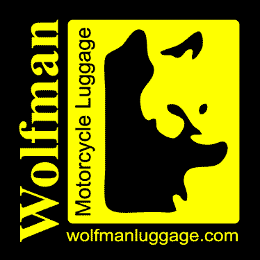
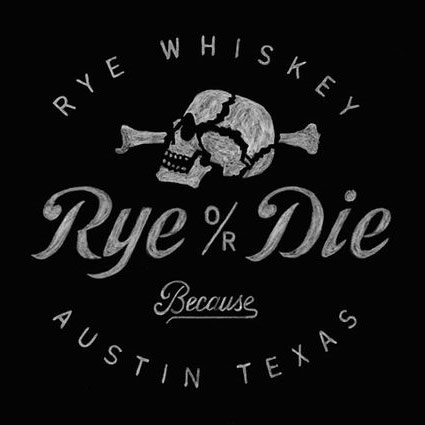
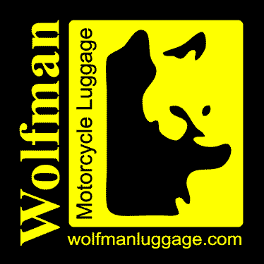
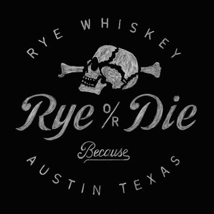

Roll The Bones is the premeier adventure / dual sport rally in Texas. It is not a race (depending on who you ask) but it embodies the spirit of racing, pushing yourself and your motorcycle to the limit. We encourage all riders to ride to their skill level. This is a community ride, we leave in in groups and do not leave folks behind.
Uncle Gus' Lodge & Marina at Lake Whitney, Texas
October 26th-29th
There are cabins available to rent through Uncle Gus' directly, camping spots are included in the rally admission price.
Attendees should plan in advance to ride with someone who has a GPS or some other navigational aid since this is not a rally focused on playing follow the leader around the countryside. If you prefer maps then you're in luck as those will be provided as well. Riders are encouraged to create small groups because small groups are more readily adaptable to the problems typically encountered on these types of rides. This is not Mommy's Hardly Daverdson Rally and you will be responsible for your own navigation and expected to manage your own risks. Don't ride over your head and come prepared to handle minor maintenance issues on your bike.
Dirty Raid
This track is designed for the little bikes. It's typically shorter and with as little pavement as possible. The goal of the Dirty Raid is to hit the nastiest roads in the area and long detours will be taken to avoid pavement and see the country side. It was all scouted on an 1150gsa (when it was dry) so technically it's doable on a big bike but not necessarily fun. Some roads may be impassable on a big bike this year with all the rain we've been getting. It's hard to say.
Rally Raid
This track is designed for the big bikes and is famous for featuring more miles than a sane group can cover in one day. On this route riders will, inevitably, get a few challenges that will test their big bike skills. Between abandoned bridges, sandy roads, and beautiful scenery riders will encounter the twistiest pavement the area has to offer. Boring gravel will be bypassed for twisty pavement.
Paved Raid
This track is provided as a courtesy to all of our street bike riding attendees. It will endeavor to show riders beautiful scenery and the twistiest paved roads in the area.
 




